Paper Orbit: exploring the research around a paper
Paper Orbit is a coordinated multiple-view explorer, not a set of separate dashboards. One canonical neighborhood state drives every view: the same nodes, links, recommendation associations, selection, filters, counts, and URL state. The views trade overview for precision deliberately.
| View | Visual representation | What it supports |
|---|---|---|
| 3D sphere | Center fixed at the origin with a halo; neighbors placed on deterministic shells. Color encodes membership, size a log scale of provider citation count, solid arrows citation direction, dashed lines recommendation association, and radius local text similarity when available. | An immediately readable overview of sample shape, relationship mix, and approximate similarity without implying a complete field map. |
| 2D SVG radial | The same nodes, edges, filters, radius semantics, and deterministic angles rendered as real SVG. No screenshot or secondary layout. | Topology without 3D perspective or occlusion; the primary analytical fallback and a precise map of what is linked. |
| Sortable list | Title, year or unknown, first authors, venue, membership badges, citation count or unknown, similarity and coverage, save and compare actions. | Exact reading, sorting, scanning, and comparison when visual proximity is not enough. |
| Year histogram | Linked bars; the center is excluded, unknown years have a separate bar, and the current context remains visible while the selected interval is highlighted. | Distribution and period selection across the loaded sample. |
| Details / compare | Provider metadata, abstract or explicit absence, source links, “why it is here,” local similarity, and a two-paper side-by-side comparison. | Inspection of one paper and comparison of candidates without losing the graph. |
Table 1. Coordinated views and their representational roles. The views share state; they do not encode different data.
Encoding contract. Membership is categorical: reference is cyan, citing amber, recommended violet; a paper in multiple sets gets a white outline and multiple badges. Citation arrows preserve direction (center → reference; citing paper → center); recommendation associations are dashed, never citation edges. Citation count uses a log scale and is labeled provider metadata, not quality. Radius is local TF-IDF cosine to the center when text exists; unknown similarity goes on a distinct outer shell, never a fabricated value. Angle and peripheral distance are layout, not meaning: they do not encode topic, influence, rank, or quality. Textual legends, badges, and labels ensure color is never the only channel.
Missing data is a visual state. Unknown year, unknown citation count, and unavailable abstract/similarity have separate filters and labels. A missing abstract never becomes zero, and an empty citation branch never becomes “no citations.”
Start and load. A reader searches by title or keyword, or resolves a DOI, arXiv ID, or URL. Demo, Snapshot, and Live are visibly separate modes; a selected result loads at most 40 references, 40 citing papers, and 20 recommendations (at most 101 nodes). The public static demo exposes only Demo and Snapshot; live mode requires the server build and is never silently substituted.
Filters are coordinated, not destructive. Relationship checkboxes are OR; year range, minimum citations, minimum similarity, and loaded-text search are AND. Unknown-year, unknown-citation, and unavailable-similarity controls decide whether those records stay visible. The center remains visible and is excluded from neighbor counts. Filters update graph, list, histogram, and counts together without recomputing scores, relayouting nodes, or issuing provider requests. Resetting filters leaves camera, history, and reading list intact; resetting the camera leaves filters intact.
| Interaction | Effect |
|---|---|
| Hover / select | Hover is transient; selection is persistent. Selecting a node or list row updates details, highlights the same paper everywhere, and opens the details drawer without erasing context. |
| Filter / sort | Shared selectors update visible counts, graph, list, and histogram. Sorting changes order only; it does not change the sample or the layout. |
| Compare / save | Up to two papers can be compared side by side; saving adds a paper to a browser-local reading list with Markdown and JSON export. |
| Recenter | Explicitly loads a new center while the current graph stays visible. A generation token lets only the latest request commit; success updates center, filters, history, URL, and selection atomically. Failure keeps the old graph and history and shows a recoverable error. |
| Back / forward / URL | Bounded history restores center, filters, view, layout, and sort. A copied URL restores the same state; stale responses cannot overwrite a newer navigation. |
Table 2. Interaction and navigation rules. Recentering is a transaction, not a filter.
Access and resilience. Search, filtering, selection, comparison, saving, recentering, and back navigation are available through HTML controls and keyboard access. Dialogs close with Escape and restore focus; year inputs duplicate histogram brushing; reduced motion disables auto-rotation; a failed WebGL context switches to the usable 2D view, and at narrow widths the default is 2D/list.
Figures 1–6 on pages 3–5 are actual screenshots of the running prototype, not mockups. Stored-snapshot figures use the real, timestamped Semantic Scholar samples; figures labeled synthetic use the explicitly fictional demo. The small interface text is intentionally paired with numbered regions and captions rather than enlarged into a fictional redesign.
| Figure | What it shows | Source mode |
|---|---|---|
| 1, p.3 | Full interface around “Attention is All you Need”: filters, 3D sphere, branch counts, details, histogram, and linked list. | Stored real snapshot |
| 2, p.3 | Close views of missing-value filters, center/details metadata, and the sortable list with membership and similarity coverage. | Stored real snapshot |
| 3, p.4 | The SVG radial view with the same 99 visible papers and relationship encoding as the 3D view. | Stored real snapshot |
| 4, p.4 | Data provenance: mode, retrieval time, branch coverage, received/distinct/skipped counts, and missing abstracts. | Stored real snapshot |
| 5, p.5 | Two-paper comparison and a saved reading-list entry with Markdown/JSON export. | Synthetic interaction demo |
| 6, p.5 | Unavailable recenter, forced WebGL failure with usable 2D fallback, and the 390 px mobile layout. | Synthetic interaction demo |
Table 3. Figure guide and data-mode labels.
The design is organized around the literature-review tasks identified in Deliverable 1, not around a generic graph-drawing checklist. Overview is useful for orientation; precise values and directed relationships remain in the 2D view, list, details, and provenance dialog. That division is the core rationale.
| D1 task | Task need | Prototype support |
|---|---|---|
| A1, C1 | Start from a known paper and understand the work it builds on. | Exact search/resolve; references with directed arrows; 2D/list inspection; recenter. |
| A2, B1 | See later work and when it took up the paper. | Citing membership, year histogram, inclusive year filter, and list sort. |
| A3, C3 | Choose what to read next; leave with a shortlist. | Local similarity, citation counts (not quality), venue/authors, compare, save and export. |
| B2 | Distinguish a citation from a recommendation, and know what the sample omits. | Solid vs dashed links, membership badges, Data info, branch status, missingness labels. |
| B3 | Follow a citation path and return without losing context. | Explicit recenter, bounded history, URL restoration, stale-request protection. |
| C2 | Judge unfamiliar venues/authors and separate foundations from noise. | Details with venue/authors/source, comparison, sorting, and visible provenance. |
Table 4. Fit between Deliverable 1 domain tasks and prototype support.
Why multiple views. The 3D sphere is a gestalt for the shape of a bounded neighborhood. Perspective and occlusion make it a poor precision surface, so the 2D SVG and HTML list are first-class rather than fallbacks. Selection, filters, and counts stay synchronized across them. The design does not claim that 3D is better than 2D or lists; it uses each for what it does well.
Why separate channels. References, citing papers, and recommendations answer different questions. Encoding them with different colors, arrow direction, and line styles prevents a recommendation from being read as a citation. Citation arrows preserve direction; the app never infers a citation from shared authors, titles, years, or recommendation membership. Multiple memberships remain visible as multiple badges rather than one forced category.
Why the sample stays visible. The provider returns bounded branches, indexing is uneven, and most stored neighbors lack abstracts. A polished graph could imply completeness, so the interface exposes requested versus received counts, failed branches, missing-value counts, and the local-similarity run in Data info. An errored references branch is preserved as an error, never rendered as zero. Citation counts are labeled as indexed counts, not quality.
Why recentering is explicit. Following a paper is the central navigation act, but replacing the graph in place loses the thread. The current graph remains during loading; only the latest response can commit; success updates history and URL atomically; failure leaves the old view usable. This supports B3 and makes the URL a shareable, restorable state rather than a transient screen.
Limitations and tradeoffs. The sphere is an overview, not a precise comparison surface; 2D/list and details carry exact values. Angles and peripheral distance are arrangement only. The sample is bounded, not a complete citation graph; citation indexing favors older work, many abstracts are missing, recommendations are candidates in an ordering rather than a measured semantic distance, and citation counts are not quality. The public static link runs stored snapshots and the synthetic demo; live mode needs the server build and provider access. No formal user study has been completed, so the personas and task fit remain design assumptions rather than measured claims.
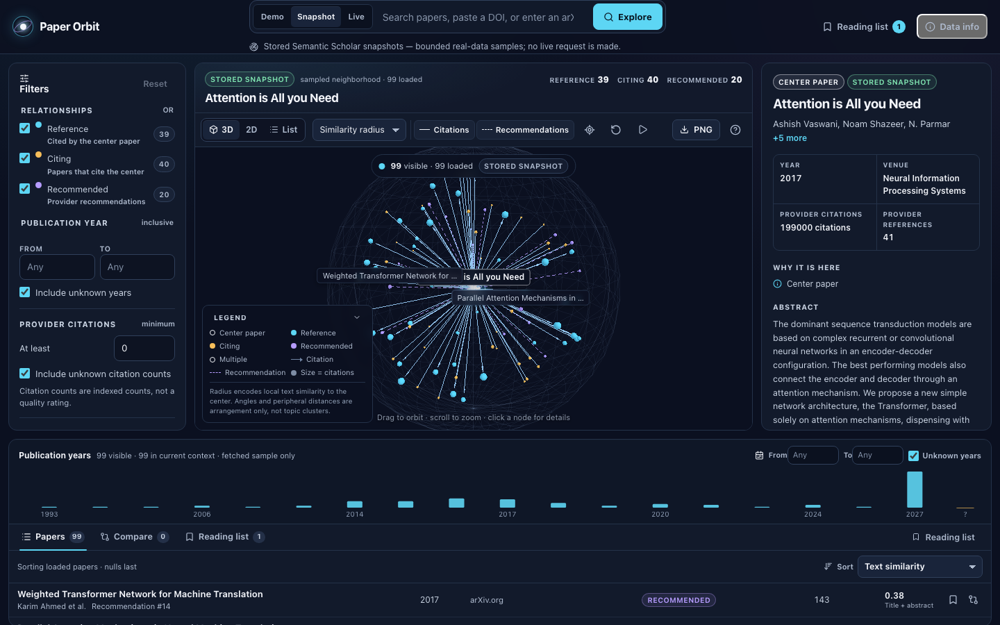
1 2 3 4 5Real stored sample: 100 loaded nodes (99 neighbors), 39 reference entries, 40 citing papers, and 20 recommendations; 79 citation links. The sphere is an overview; exact values remain in the list and details. The legend states that radius is local similarity and that angle/peripheral distance are arrangement only.
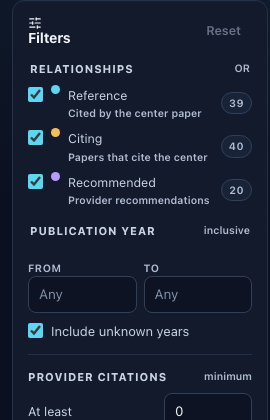
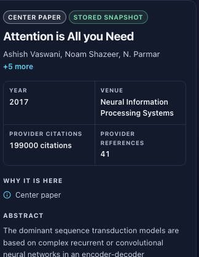
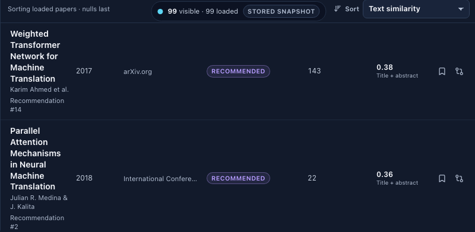
Actual stored-snapshot crops. The left and center panels are enlarged from Figure 1; the list is the same stored sample. Unknown values remain distinguishable from zero throughout.
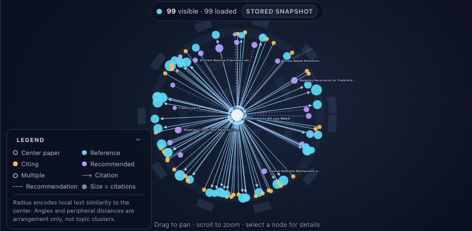
The 2D view is a true SVG renderer, not a canvas snapshot. It uses the same 99 visible papers, filters, selection, radius semantics, and deterministic angles as the 3D view. The visible sample is 99 of 99 loaded; the legend repeats that radius is local text similarity and that angle and peripheral distance are arrangement only. This is the view to use when 3D perspective or occlusion would make a relationship hard to read.
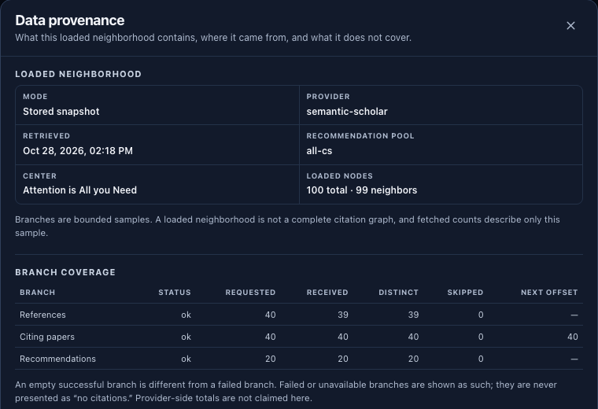
The provenance dialog is part of the visualization, not a hidden settings page. It reports the mode, retrieval timestamp, recommendation pool, loaded nodes, requested/received/distinct/skipped counts per branch, and missing abstracts. An empty successful branch is distinguished from a failed or unavailable one. Provider-side totals are not claimed as the loaded sample.
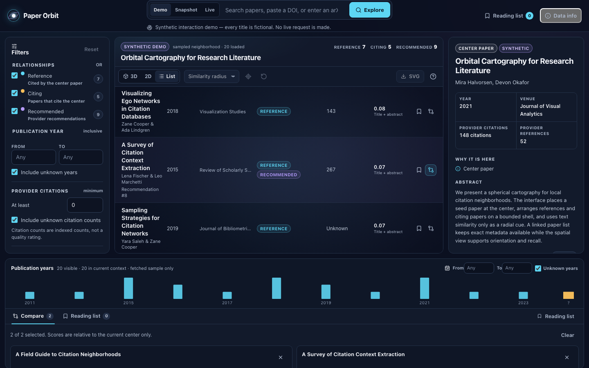
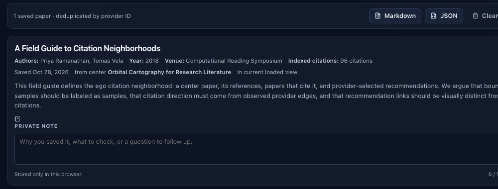
Figure 5 note. The comparison and reading-list flows are shown with the labeled synthetic catalog because it does not depend on network access. The same controls operate on stored or live neighborhoods.
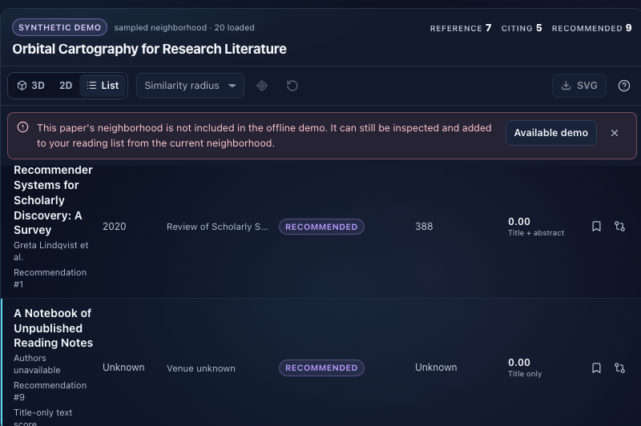
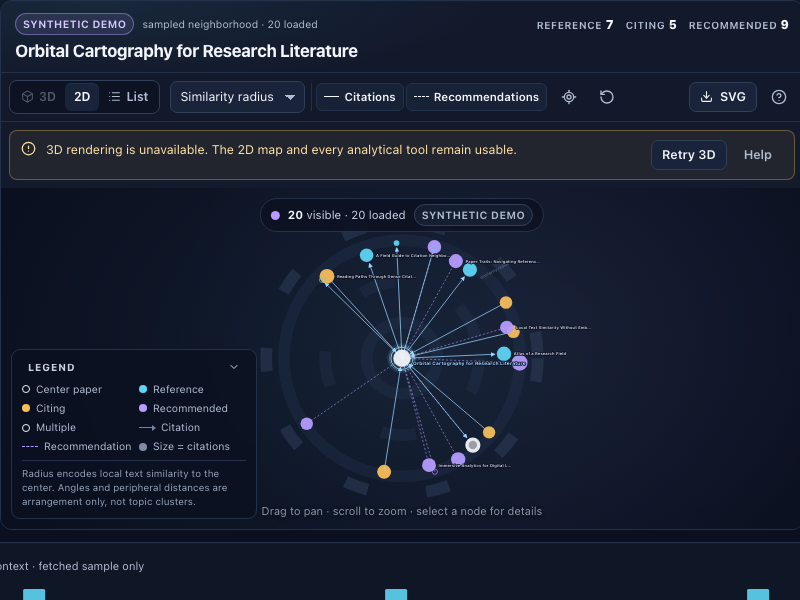
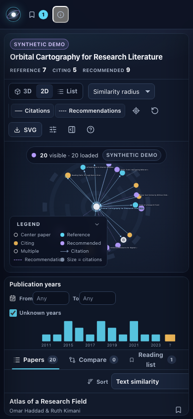
Actual screenshots. These are interaction and resilience states, not design mockups. The synthetic labels are part of the evidence that the demo is never silently substituted for real provider data.